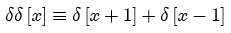

Unit delta functions located at +1 and -1

The symmetric delta pair may be scaled:
Parameters:
Support: 2 (scaled by width)
Area: 2 (Dirac deltas)
Symmetry: even
Read more about the Dirac delta at:
Read more about the Kronecker delta at: